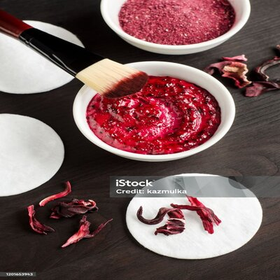

Proceso de Elaboración
Vino Artesanal de Flor de Jamaica

Ingredientes
- 150 gramos de flores de Jamaica deshidratadas
- 3 litros de agua hervida
- 500 gramos de azúcar
- Levadura natural (opcional)
Elaboración
El proceso incluye la deshidratación artesanal de las flores, la preparación del mosto y la fermentación natural, seguida del filtrado y embotellado. Todo bajo estrictas normas de calidad.
Normativas
La producción de vino artesanal de Jamaica sigue la Norma Mexicana NMX-FF-115-SCFI-2010, garantizando la calidad y seguridad del producto procesado.

Resultados
El vino de Jamaica tiene un color rojo intenso, aroma floral y un equilibrio entre dulzura y acidez, siendo un producto artesanal de alta calidad.